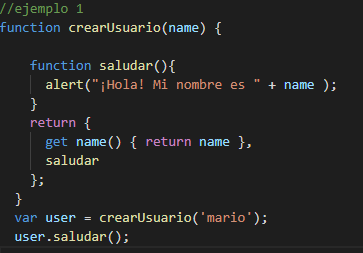
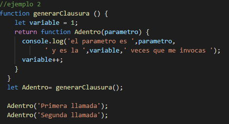
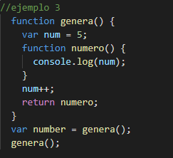

Es la capacidad de una función de mantener
su ámbito de variables después de haber sido retornada por otra función.
La existencia de closures aporta ventajas a la programación con JavaScript, ya que podemos usarlos para resolver
necesidades que nos surjan. Pero también genera problemas: a veces se generan closures sin querer con efectos
indeseados. O a veces se crea un excesivo número de closures innecesariamente, consumiendo recursos y
haciendo más lenta la ejecución del código.
Los ejemplos teoricos son


